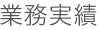
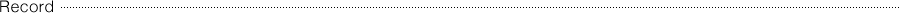

株式会社 マチスデザイン | 一級建築士事務所


[企画・設計・施工例]
| 1988.11.10 | 株式会社マチス・デザイン・オフィス設立 |
|---|---|
| 1988 | 原宿「カフェ ミスティック」 フィリップ・スタルクを起用した大型カフェレストランをプロデュース |
| 1990 | 河口湖「ホテルLe Lac」 アンドレ・プットマンによるレストランホテルをプロデュース、施工 |
| 1995 | 札幌マルサⅡ 企画・リーシング トランスコンチネンツ |
| 2007.07.01 | 株式会社マチスデザインに社名変更 |
[企画・設計・施工例]
| 2013 | ||
|---|---|---|
| 「ビュル デ サボン」大宮 | 「ドゥアルシーヴ」有楽町 | 「フレイムスレイカズン」新静岡 |
| 「オタンタマンSM2」八尾 | 「グラスライン」相模大野 | 「リーブル」横浜 |
| 「R&N」大阪 | 「SM２ケイッティオ」名取 | 「ピポワンヌ」渋谷 他 | 2014,spring |
| 「フレイムスレイカズン」和歌山 | 「SM2ケイッティオ」博多 | 「B.L.U.E」新越谷 |
| 「アルシーヴ」西宮 | 「アトリエドゥサボン」名古屋 | 「ドロール」中目黒 |
| 「SM2」四日市 | 「ポタニクス」京都 | 「ビブリオテイク」天神 他 |